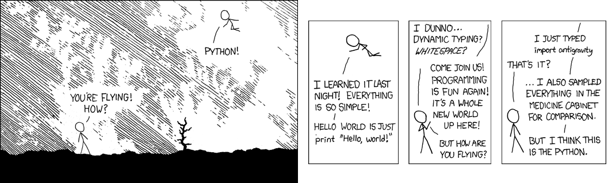

A swift introduction to the greatness of
Python
and its use in data science
Carlos García Márquez / carlos.garcia@kernel-analytics.com
What everybody knows
... and you should too, 'cause it's on Wikipedia.
The name...
... comes originally from Monty Python.
But the logo are actually two snakes:
It was created...
... by Guido van Rossum, who is:
- the appointed BDFL
- dutch (but we forgive him)
It was created...
... in 1991. Which means it's older than:
- Java (1995)
- JavaScript (1995)
- Ruby (1995)
- R (1992)
Python is free software
It's developed by the Python Software Foundation.
And many developers all over the place.
The current version is Python 3.4
Python 3 launched in 2008.
It introduced a lot of big changes. Good changes.
But the community is still transitioning from Python 2.7.
Python 2.7 will have support until 2020.
An interpreted language
There are many implementations of Python runtimes.
- CPython (C)
- PyPy (Python)
- Jython (Java)
- IronPython (.NET)
You probably use CPython, the reference implementation.
Cross-platform
Most implementations are cross-platform.
They run in both Linux and FreeBSD.
And some lesser operating systems too.
Reasons to use Python
... because me saying you should every day is not enough.
It's very easy to learn
- The basics are very simple.
- You can get up to speed and be productive in a few hours.
- After a while it becomes intuitive and things just work.
- This is a result of a big effort by the community to strive for quality, consistency and cohesion.
It has great documentation
- The official documentation is excellent.
- In Python the documentation lives within the code.
def tabulate(function, start=0):
"Return function(0), function(1), ..."
return map(function, count(start))An impressive catalog of libraries
The official Python Package Index lists 55619 packages.
Many C, C++ and Java libraries have Python wrappers.
A huge community
The Python community is very active and welcoming.
There's talks, conferences and courses all the time.
Python is fun!
Check the humor section of the official documentation.
Python & data science
With real examples, fuck yeah!
IPython
TO DO
IPython Notebook
TO DO
Pandas
Data structures and analysis.
Numpy
Vectorised operations with n-dimensional arrays.
Implemented in C. Lightning-fast.
If you think you can do faster writing your own C++ ...
I feel bad for you son.
Scipy
A scientific computing library, duh.
scikit-learn
TO DO
Matplotlib
A plotting library. It's the de-facto standard and used by SciPy.
It's interface is designed to be similar to Matlab.
Try it yourself
Your lesser operating system doesn't have a package manager?
DON'T PANIC! Check out Anaconda, it has everything you need.
But wait! There's more!
The Python Showdown
r'but I like (?P<language>.*)\!'
if language == 'Python':
pass
elif language == 'R':
- Python isn't much faster, but you'll be calling C wrappers mostly
- PyPI has 55619 libraries, you find almost anything you can imagine
- CRAN has 6355 libraries, but better tools for statistical work
- Python is nicer to move data around, load, and parse files
- Python is better to automate tasks and write system scripts
- Pandas has dataframes and it's pretty good
- matplotlib is similar to ggplot, although not as good
- IPython NB is an alternative to RStudio, but not as good
- Python libraries have up to date, more complete, non-pdf docs
- Python code is easier to read ← (and that's an objective fact)
- Python is cool ← (that's not)
elif language == 'C++':
- TO DO
- TO DO
- TO DO
elif language == 'Matlab':
- TO DO
- TO DO
- TO DO
elif language == 'Java':
- TO DO
- TO DO
- TO DO
else:
raise HandException(language)
Go learn some Python!
It's dangerous to go alone, follow these: